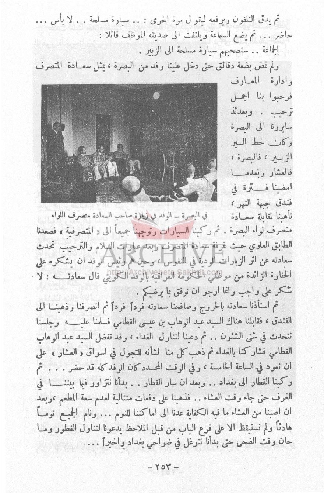

مارس ١٩٥٢ · مقال في مجلة، «الوفد الكويتي إلى العراق»، ص ٢٥٢ و٢٥٣ و٢٦٦
عبدالوهاب بن عيسى القطامي يستقبل الوفد الكويتي في البصرة
ما هي
وصف مصور لوفد الأساتذة والطلبة الكويتيين الذي خرج إلى العراق في مارس ١٩٥٢ برئاسة السيد أحمد البشر عضو مجلس المعارف. وبعد مقابلة متصرف لواء البصرة ذهب الوفد إلى الفندق: «فقابلنا هناك السيد عبد الوهاب بن عيسى القطامي فسلمنا عليه وجلسنا نتحدث في شتى الشؤون، ثم دعينا لتناول الغداء، وقد تفضل السيد عبد الوهاب القطامي فشاركنا بالغداء»، ثم تجولوا في أسواق العشار وركبوا القطار إلى بغداد (ص ٢٥٣). وتظهر صورة في الصفحة ٢٦٦ رئيس الوفد والسيد عبدالوهاب بن عيسى القطامي وبعض الأساتذة على مائدة الغداء في فندق جبهة النهر بالبصرة.
أهميتها
يظهر عبدالوهاب بن عيسى القطامي في البصرة سنة ١٩٥٢ حيث أقام بعد الحرب، يستقبل وفدا من الكويت، مع صورته.
صور الصفحات



أسماء أخرى
المصادر
«الوفد الكويتي إلى العراق»، ص ٢٥٢ و٢٥٣ و٢٦٦، من أرشيف المجلات (صخر)
كيف كُتب هذا النص: لا يظهر اسم المجلة ولا العدد في الصفحات المرسلة. والصفحات ٢٥٤ إلى ٢٦٥ تصف بغداد والمدارس ولا تذكر العائلة. ولا تحدد الصورة من هو كل واحد.
افتح في الموقع التفاعلي